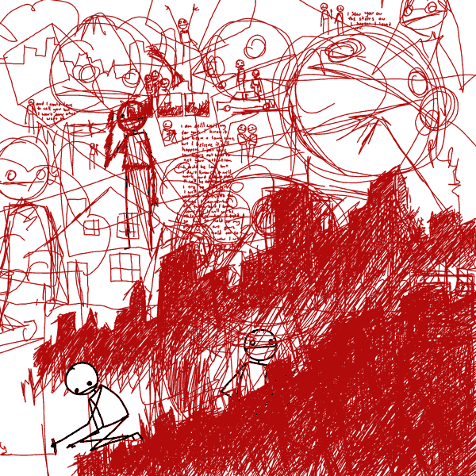

Our Sponsors



ES6 = ECMAScript 6 = next version of JavaScript
ES6 brings tonnes of exciting new features, some of which you may already be familiar with from other languages. These include:
Currently, most browsers fully support ES5. All the major browser vendors are working on implementing various parts of ES6.
Browsers (by number of features implemented):
Source: Kangax ES6 Compatability table
More info: modern.ie, Chromium Dashboard
Source: Kangax ES6 Compatability table